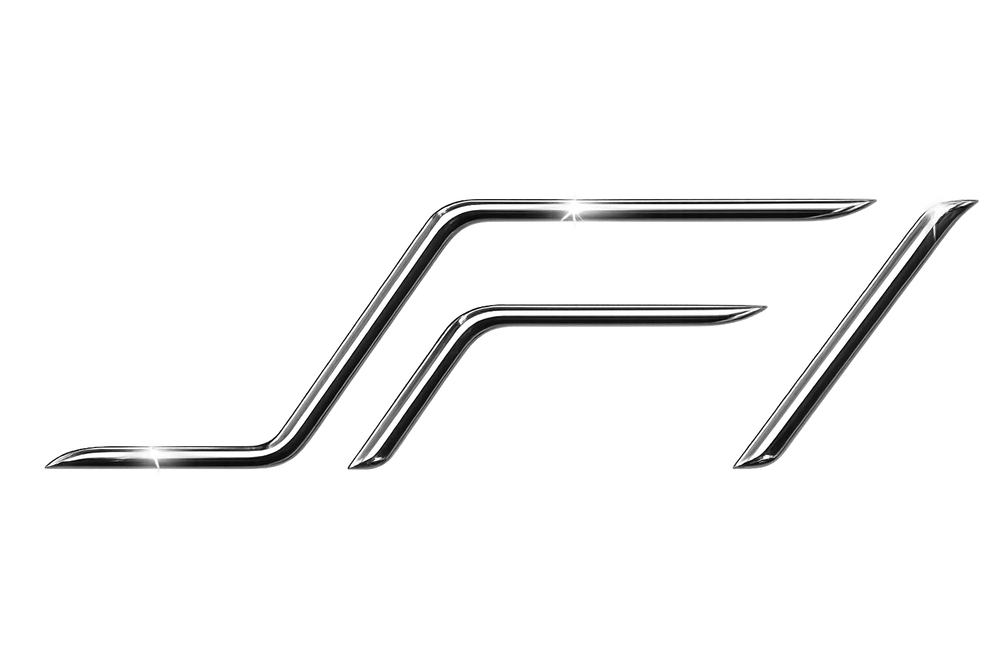
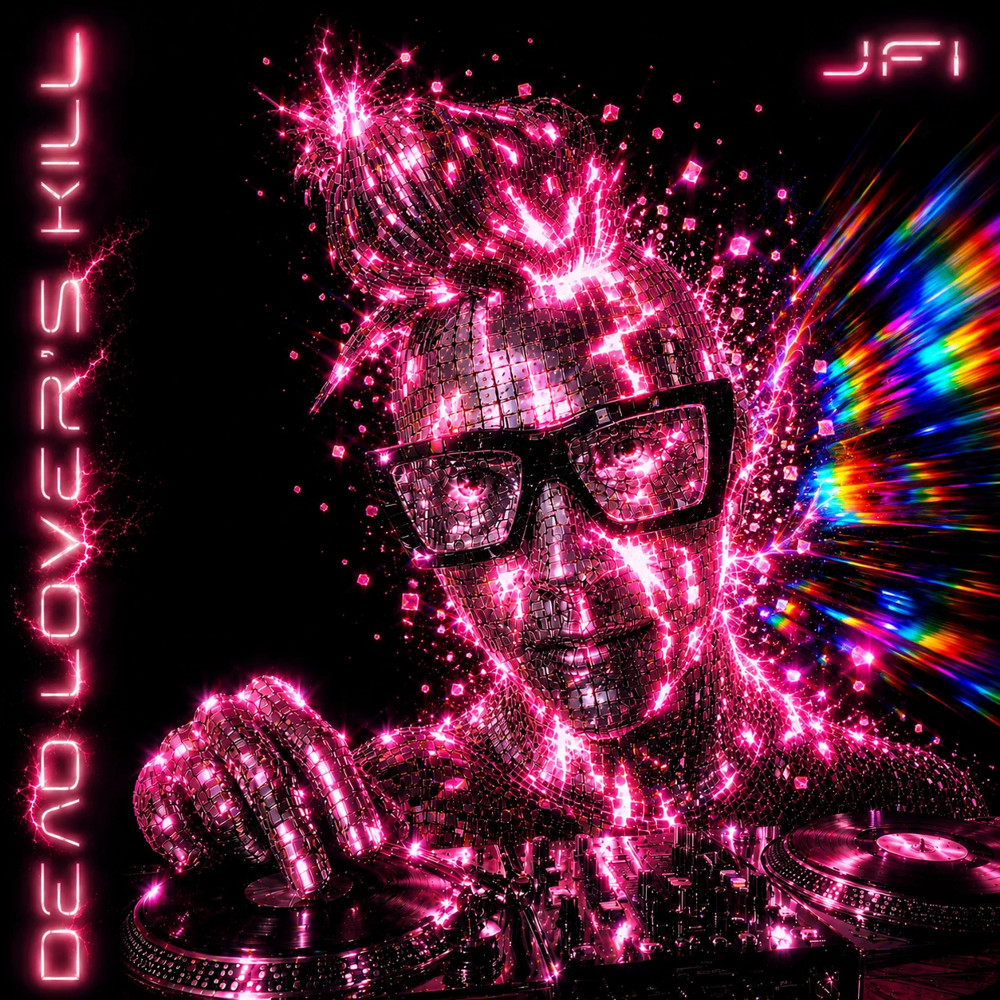
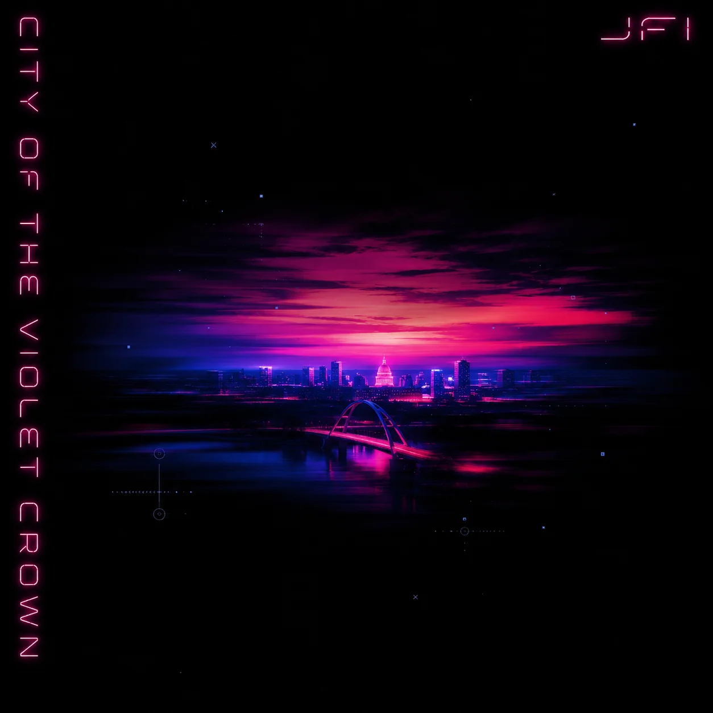
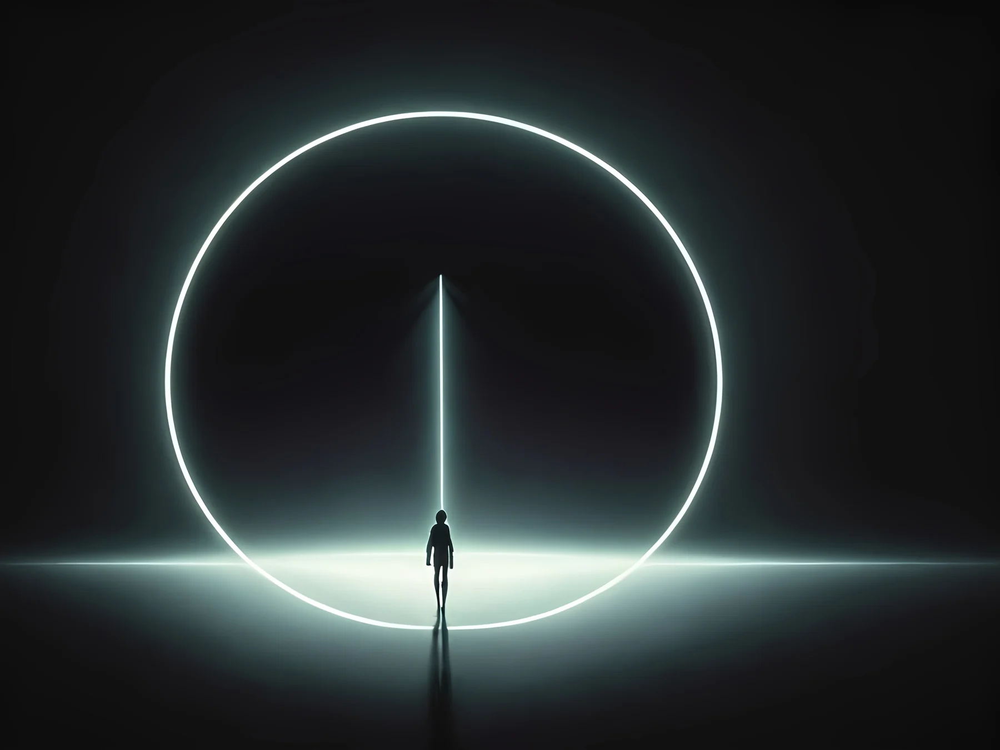
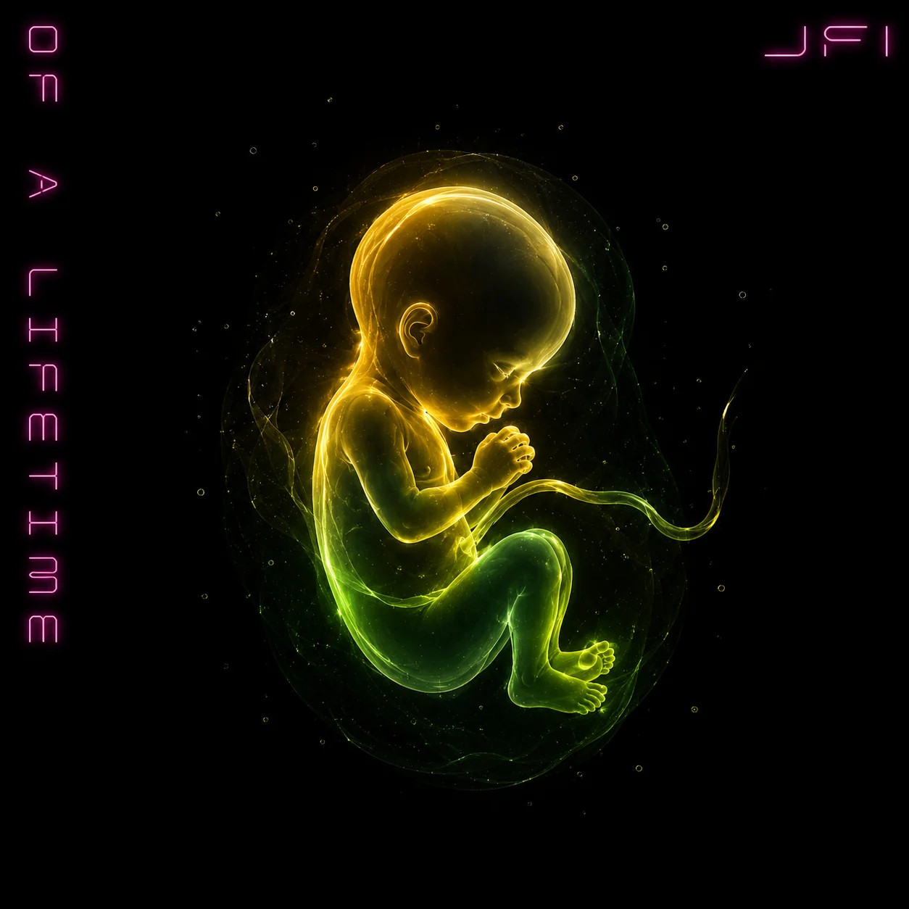
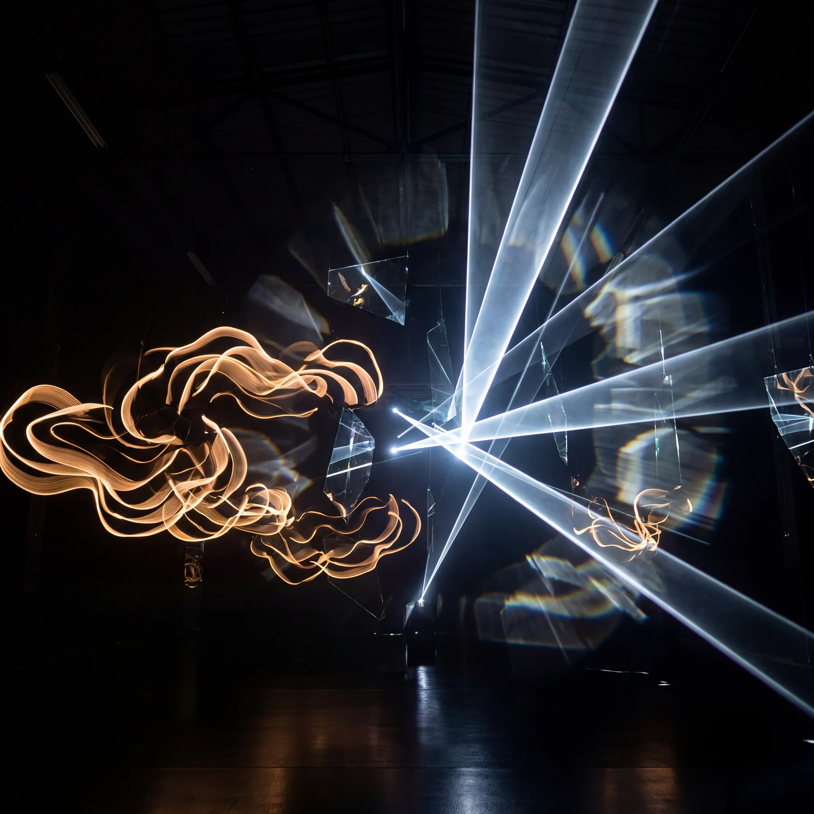
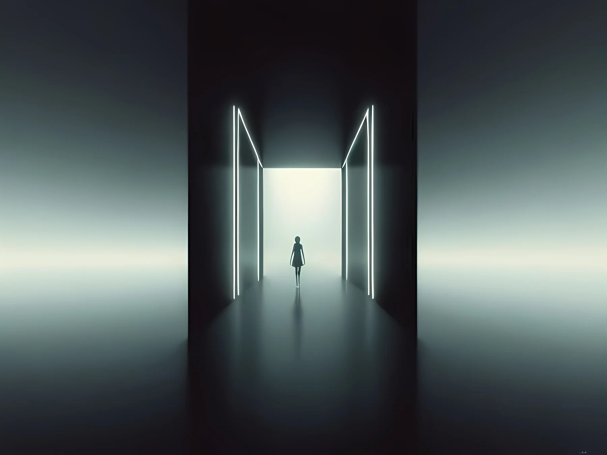

JFI presents

Descent From
the 5D Realm
JFI is Vapor Wave Positivity — a genre dedicated to self exploration and manifestation.
Tune in to activate your artist within and be
one with the divine.
The transmission
Fi hears
what lives beyond.
Before sound, there is intention. Before form, a signal—intelligent, luminous, waiting to be decoded.
Dimensional collapse
Reality
takes form.
Impossible geometry turns inward. Its edges become light. Its light becomes matter. Its points become stars.
Cosmic descent
The signal
finds direction.
Across scale and silence, the transmission remains coherent. We follow it toward a world coming into view.
Galaxy to Earth
A destination
appears.
The vast becomes local. The divine current bends toward Texas, carrying a song not yet heard.
Austin, Texas
City of the
Violet Crown.
River, bridge, skyline, stage. The city receives the transmission and begins to glow from within.
The human receiver
J is the voice.
Fi is the signal.
What crossed dimensions becomes reflection, breath, rhythm, two turntables, and a microphone.
The signal becomes sound
Dead Lover's Kill
Higher-dimensional energy, decoded into five transmissions.


The new single
City of the
Violet Crown
From Dead Lover's Kill
Embodiment / live transmission
Destroy the Girl

EPK / Bio
Divine transmissions
from the 5D realm.
J is the voice. Fi is an angel that whispers divine transmissions. JFI songs are the decoded divine energy of the 5D realm of humanity's origin.
Dubbed Vapor Wave Positivity, audience members experience a heightened awareness of their own authentic creativity. When JFI does its thang, people are reminded and empowered to greater authenticity.
Rocking two turntables and a microphone, the live vocals and wild beats of JFI are an inspiring celebration of dance and flow state.
Career highlights
Dead Lover's Kill
JFI's full-length debut brings together an all-star cast of beat-makers and producers around 15 original compositions, including Davey Badiuk, Rex Chroma, Bedlake, KYON, Denis, Hybridas, Eternity Bro, Dirty Freqs, Harrison Amer, Emmett Cooke, Vicate Studios, Arenas, and Noizlab.
Recorded in Austin at Moon Dial and mixed by Davey Badiuk at Killingsworth Studios in Los Angeles. JFI's first show at Sahara Lounge brought in the ATX Refugees, a biker club with over 50 members. A subsequent show with Pretty Something featured Tione Brown on saxophone.
Live video
City of the Violet Crown
Live at Moon Dial
Production
Tech Rider
- Stereo vocal XLR vocal processor out
- Stereo XLR or DI turntables out
- Dynamic microphone alto sax
- Stereo guitar XLR Helix out
- Guitar amp with SM57



The audience activates
The signal
moves outward.
Fi to J. J to music. Music to the room. One point of light becomes many—and every light remembers where it came from.
The final destination
The signal was coming for you.
You are born
to create.
The divine signal does not terminate at JFI. It passes through the music and awakens what was already alive inside you.
Let's do this!!!Management / Booking